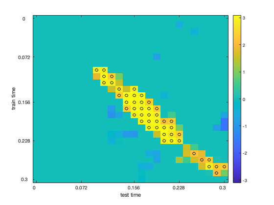

MEEG time generalization multiple comparison correction
This example shows MVPA analyses performed on MEEG data.
The input dataset involved a paradigm where a participant saw images of six object categories.
The code presented here can be adapted for other MEEG analyses, but there please note: * the current examples do not perform baseline corrections or signal normalizations, which may reduce discriminatory power.
Note: running this code requires FieldTrip.
- For CoSMoMVPA's copyright information and license terms, #
- see the COPYING file distributed with CoSMoMVPA. #
Contents
get timelock data in CoSMoMVPA format
% set configuration config = cosmo_config(); data_path = fullfile(config.tutorial_data_path, 'meg_obj6'); % show dataset information readme_fn = fullfile(data_path, 'README'); cosmo_type(readme_fn); % reset citation list cosmo_check_external('-tic'); % load preprocessed data data_fn = fullfile(data_path, 'meg_obj6_s00.mat'); data_tl = load(data_fn); % convert to cosmomvpa struct and show the dataset ds = cosmo_meeg_dataset(data_tl); cosmo_disp(ds); % set the targets (trial condition) ds.sa.targets = ds.sa.trialinfo(:, 1); % 6 categories % set the chunks (independent measurements) % all trials are here considered to be independent nsamples = size(ds.samples, 1); ds.sa.chunks = (1:nsamples)'; % in addition give a label to each trial index2label = {'body', 'car', 'face', 'flower', 'insect', 'scene'}; ds.sa.labels = cellfun(@(x)index2label(x), num2cell(ds.sa.targets)); % just to check everything is ok cosmo_check_dataset(ds);
******************************************************************************
MEG responses to a human participant viewing pictures of six object categories
******************************************************************************
Contents
--------
- meg_obj6_s00.mat
Preprecessed data from four runs in Matlab / GNU Octave format.
Data is stored in a FieldTrip structure with the following relevant
fields:
+ .trial
n_samples * n_sensors * n_time array with single trial data
+ .time
1 * n_time vector of time relative to stimulus onset.
+ .label
1 * n_sensors cell array with MEG channel labels.
+ .trialinfo
n_time * 6 matrix with trial information; the columns represent:
1) stimulus category in the range `(1:6)`, with the order
being 'body','car','face','flower','insect','scene'.
2) stimulus index in the range `(1:48)`.
3) unused.
4) cumulative number of catch trials in the current run.
5) stimulus presentation duration (in miliseconds).
6) run number.
In the current release, n_samples=494, n_sensors=295, n_time=301.
Version
-------
version 0.1, 26 April 2016
Methods
-------
This dataset contains data from an experiment where a participant
(32y right-handed male) viewed images of six categories while being measured
with MEG. Over four runs, trials were presented at a rate of 1Hz while the
participant performed a one-back task. Blocks of eight trials where separated
by blink periods to reduce eye movement artefaces.
Data was preprocessed using the FieldTrip toolbox [OFMS11].
Data was bandpass-filtered between 1Hz and 40Hz, resampled from 1000Hz to
250Hz, and baseline period for the period of -250 to -50 ms relative to (i.e.
before) stimulus onset.
Based on visual inspection, trials and sensors that seemed noisy were removed.
Catch trials (trials were the stimulus was repeated relative to the previous
trial) were also removed.
License
-------
The contents are made available by Nikolaas N. Oosterhof <nikolaas.oosterhof
|at| unitn.it> under the Creative Commons CC0 1.0 Universal Public Domain
Dedication ("CC0"). See the LICENSE file for details, or visit
http://creativecommons.org/publicdomain/zero/1.0/deed.en.
Download
--------
A zip file with all data is available from the CoSMoMVPA_ website [OCH16]:
http://www.cosmomvpa.org/datadb-meg_obj6.zip
.. _CoSMoMVPA: http://www.cosmomvpa.org
Contact
-------
Nikolaas N. Oosterhof <nikolaas.oosterhof |at| unitn.it>
References
----------
:ref:`Oostenveld, R., Fries, P., Maris, E., and Schoffelen, J.-M. (2011) <OFMS11>` FieldTrip: Open source software for advanced analysis of MEG, EEG, and invasive electrophysiological data.. Computational Intelligence and Neuroscience, 2011:156869.
:ref:`Oosterhof, N. N., Connolly, A. C., and Haxby, J. V. (2016) <OCH16>`. CoSMoMVPA: multi-modal multivariate pattern analysis of neuroimaging data in Matlab / GNU Octave. biorxiv.org, 2016. doi:10.1101/047118.
.samples
[ -3.42e-12 1.32e-12 6.77e-12 ... 2.91e-12 1.02e-11 1e-12
1.78e-12 1.42e-12 -2.35e-12 ... -3.67e-12 -5.4e-12 7e-15
7.84e-12 1.71e-13 -6.44e-13 ... -2.88e-13 2.25e-12 1.2e-13
: : : : : :
-2.46e-12 -1.41e-16 2.27e-12 ... -5.81e-13 -6.2e-12 2.74e-13
-7.9e-12 4.2e-12 4.11e-12 ... -5.62e-12 7.64e-12 1.98e-13
-2.32e-13 -2.49e-12 7.39e-12 ... 2.08e-12 -8.5e-12 2.42e-13 ]@494x88795
.fa
.chan
[ 1 2 3 ... 293 294 295 ]@1x88795
.time
[ 1 1 1 ... 301 301 301 ]@1x88795
.a
.fdim
.labels
{ 'chan'
'time' }
.values
{ { 'MEG0113' 'MEG0112' 'MEG0123' ... 'MEG2642' 'MEG2643' 'MEG2641' }@1x295
[ -0.296 -0.292 -0.288 ... 0.896 0.9 0.904 ]@1x301 }
.meeg
.samples_field
'trial'
.sa
.trialinfo
[ 4 28 0 1 142 1
3 18 0 2 147 1
2 15 0 2 147 1
: : : : : :
6 47 0 23 142 4
4 28 0 24 146 4
3 18 0 24 147 4 ]@494x6
Select subset of sensors and time points
% Select posterior gradiometers sensor_posterior_planar = {'MEG1632', 'MEG1642', 'MEG1732', 'MEG1842', ... 'MEG1912', 'MEG1922', 'MEG1942', 'MEG2232', ... 'MEG2312', 'MEG2322', 'MEG2342', 'MEG2432', ... 'MEG2442', 'MEG2512', 'MEG2532', ... 'MEG1633', 'MEG1643', 'MEG1733', 'MEG1843', ... 'MEG1913', 'MEG1923', 'MEG1943', 'MEG2233', ... 'MEG2313', 'MEG2323', 'MEG2343', 'MEG2433', ... 'MEG2443', 'MEG2513', 'MEG2533'}; msk = cosmo_dim_match(ds, 'chan', sensor_posterior_planar, ... 'time', @(t)t >= 0 & t <= .3); ds_sel = cosmo_slice(ds, msk, 2); ds_sel = cosmo_dim_prune(ds_sel);
subsample time dimension to speed up the analysis
subsample_time_factor = 3; % take every 3rd time point % take every subsample_time_factor-th % hint: use ds.fa.time to find the desired features, then use cosmo_slice % and cosmo_dim_prune. % >@@> msk = mod(ds_sel.fa.time, subsample_time_factor) == 1; ds_sel = cosmo_slice(ds_sel, msk, 2); ds_sel = cosmo_dim_prune(ds_sel); % <@@< % to illustrate group analysis, we use data from a single participant % and divide it in ten parts. Each part represents a pseudo-participant. n_pseudo_participants = 10; ds_sel.sa.subject_id = cosmo_chunkize(ds_sel, n_pseudo_participants); ds_cell = cosmo_split(ds_sel, 'subject_id');
apply the cosmo_dim_generalization_measure to the data from each pseudo-participant
group_cell = cell(n_pseudo_participants, 1); for k = 1:n_pseudo_participants ds_subj = ds_cell{k}; ds_subj.sa = rmfield(ds_subj.sa, 'subject_id'); ds_subj = cosmo_balance_dataset(ds_subj); ds_subj.sa.chunks = cosmo_chunkize(ds_subj, 2); ds_subj_tr = cosmo_dim_transpose(ds_subj, 'time', 1); % use a custom measure that computes a one-way ANOVA F-value and % then converts this to a z-score measure = @(d, opt)cosmo_stat(d, 'F', 'z'); ds_time_gen = cosmo_dim_generalization_measure(ds_subj_tr, ... 'measure', @cosmo_correlation_measure, ... 'dimension', 'time'); group_cell{k} = ds_time_gen; end
+00:00:00 [####################] -00:00:00 +00:00:00 [####################] -00:00:00 +00:00:00 [####################] -00:00:00 +00:00:00 [####################] -00:00:00 +00:00:00 [####################] -00:00:00 +00:00:00 [####################] -00:00:00 +00:00:00 [####################] -00:00:00 +00:00:00 [####################] -00:00:00 +00:00:00 [####################] -00:00:00 +00:00:00 [####################] -00:00:00
show an element of group_cell. What is the size of .samples?
cosmo_disp(group_cell{1});
.samples
[ 0.141
-0.0912
-0.0626
:
0.0339
0.133
0.131 ]@676x1
.sa
.labels
{ 'corr'
'corr'
'corr'
:
'corr'
'corr'
'corr' }@676x1
.test_time
[ 1
2
3
:
24
25
26 ]@676x1
.train_time
[ 1
1
1
:
26
26
26 ]@676x1
.a
.sdim
.labels
{ 'train_time' 'test_time' }
.values
{ [ 0 [ 0
0.012 0.012
0.024 0.024
: :
0.276 0.276
0.288 0.288
0.3 ]@26x1 0.3 ]@26x1 }
To do group analysis, the above format will not work. We want a dataset ds_group with size n_pseudo_participants x NF where NF is the number of features.
% allocate a cell group_cell_tr with the same size of group_cell % >@@> group_cell_tr = cell(size(group_cell)); % <@@< for k = 1:numel(group_cell) % take data from the k-th participant and store % in a variable ds_time_gen ds_time_gen = group_cell{k}; % change 'train_time' and 'test_time' from being sample dimensions % to become feature dimensions. % Hint: use cosmo_dim_transpose. % >@@> ds_time_gen_tr = cosmo_dim_transpose(ds_time_gen, ... {'train_time', 'test_time'}, 2); % <@@< % set chunks and targets for a one-sample t-test against zero, % so that across participants: all targets have the same value, and % all chunks have different values. % >@@> ds_time_gen_tr.sa.chunks = k; ds_time_gen_tr.sa.targets = 1; % <@@< % store ds_time_gen_tr as the k-th element in group_cell_tr % >@@> group_cell_tr{k} = ds_time_gen_tr; % <@@< end % show an element of group_cell_tr. What is the size of .samples? cosmo_disp(group_cell_tr{1});
.samples
[ 0.141 -0.0912 -0.0626 ... 0.0339 0.133 0.131 ]@1x676
.fa
.test_time
[ 1 2 3 ... 24 25 26 ]@1x676
.train_time
[ 1 1 1 ... 26 26 26 ]@1x676
.sa
.labels
{ 'corr' }
.transpose_ids
[ 1 ]
.chunks
[ 1 ]
.targets
[ 1 ]
.a
.fdim
.labels
{ 'train_time'
'test_time' }
.values
{ [ 0 0.012 0.024 ... 0.276 0.288 0.3 ]@1x26
[ 0 0.012 0.024 ... 0.276 0.288 0.3 ]@1x26 }
stack the elements in group_cell_tr into a dataset ds_group >@@>
ds_group = cosmo_stack(group_cell_tr);
% <@@<
define a clustering neighborhood and store the result in a struct called nbrhood Hint: use cosmo_cluster_neighborhood
nbrhood = cosmo_cluster_neighborhood(ds_group);
+00:00:00 [####################] -00:00:00 crossing neighborhoods
% run multiple comparison correction using cosmo_montecarlo_cluster_stat % with 1000 iterations, for a t-test against h0_mean=0. opt = struct(); opt.niter = 1000; opt.h0_mean = 0; ds_tfce = cosmo_montecarlo_cluster_stat(ds_group, nbrhood, opt);
+00:00:01 [####################] -00:00:00 p = 0.053 / 0.000 [+/-0.016] (left/right)
>@@>
ds_group = cosmo_stack(group_cell_tr); % <@@< % extract the values from the ds_tfce, using cosmo_unflatten. % store the array, and the dimension labels and values, into variables % arr, dim_labels, and dim_values. % Hint: use cosmo_unflatten. % >@@> [arr, dim_labels, dim_values] = cosmo_unflatten(ds_tfce); % <@@< % Reshape to arr to be 2-dimensional and store the result in arr_2d, % then visualize the array % >@@> arr_2d = squeeze(arr); % <@@< clim = [-1, 1] * max(abs(arr_2d(:))); imagesc(arr_2d, clim); % add axis labels nticks = 5; ytick = round(linspace(1, numel(dim_values{1}), nticks)); ylabel(strrep(dim_labels{1}, '_', ' ')); set(gca, 'Ytick', ytick, 'YTickLabel', dim_values{1}(ytick)); xtick = round(linspace(1, numel(dim_values{2}), nticks)); xlabel(strrep(dim_labels{2}, '_', ' ')); set(gca, 'Xtick', xtick, 'XTickLabel', dim_values{2}(xtick)); colorbar(); % bonus: add markers indicating significance % >@@> z_min = 1.96; [i, j] = find(abs(arr_2d) > z_min); hold on; scatter(j, i, 'o', 'k'); hold off; % <@@<